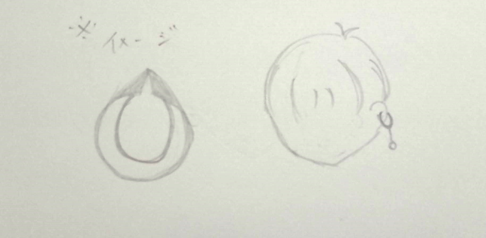

想像図

作成開始
一つ目

先がつながって開かない。どう頑張っても切れない。
二つ目

薄くして無理矢理つながってるところを切ってみた。狭さと鋭さゆえにつけてみると激痛。
三つ目

薄さを元に戻して、先のつながり、角をなくした。でもつけるのが大変。
四つ目

薄くした。つけやすくなり、簡単に開くようになった。また、つかむのも少ない力でよくなった。（ほぼ完成）
おまけ
アクセサリーだから何かビーズっぽい飾りをつける所が欲しいな・・・


完成！！

※ピンセットとしてもちゃんと使えます。
設計図
stlファイル